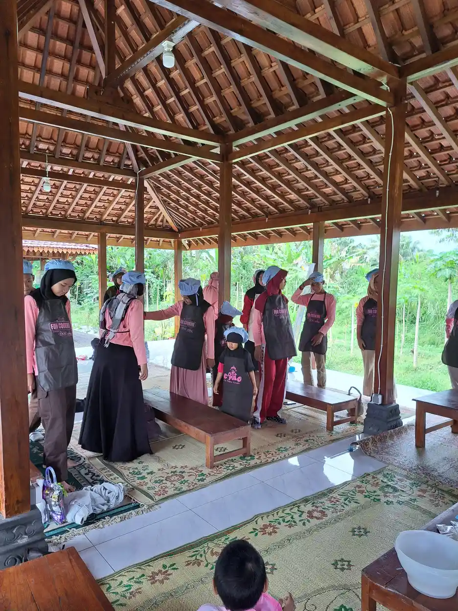

Tuna wicara adalah kondisi gangguan pada kemampuan bicara dan komunikasi verbal seseorang. Istilah ini berasal dari bahasa Jawa Kuna, di mana "tuna" berarti kurang atau rugi, dan "wicara" berarti bicara atau berkata-kata. Penyandang tuna wicara mengalami kesulitan hingga ketidakmampuan dalam memproduksi suara, mengucapkan kata, atau menyampaikan pesan secara lisan kepada orang lain.
Menurut data World Health Organization (WHO), sekitar 7,5% anak di seluruh dunia mengalami gangguan bicara dan bahasa dalam berbagai tingkat keparahan. Di Indonesia, Badan Pusat Statistik mencatat bahwa gangguan bicara merupakan salah satu dari lima jenis disabilitas yang paling banyak ditemukan. Data Kementerian Sosial tahun 2023 menyebutkan bahwa terdapat lebih dari 400.000 penyandang gangguan wicara di Indonesia, meskipun angka sesungguhnya diperkirakan lebih tinggi karena banyak kasus yang tidak terdata.
Di Yayasan Ukhuwah Kaffah Amanatullah (YUKA), kami memiliki komitmen kuat dalam mendampingi anak-anak berkebutuhan khusus, termasuk mereka yang mengalami gangguan bicara dan komunikasi. Melalui Sekolah Inklusi Taruna Imani di Sleman, Yogyakarta, kami percaya bahwa setiap anak berhak mendapatkan pendidikan dan kesempatan untuk berkembang, apapun kondisinya. Untuk memahami lebih luas tentang anak berkebutuhan khusus, Anda bisa membaca panduan lengkap kami tentang ABK (Anak Berkebutuhan Khusus).
Daftar Isi
Apa Itu Tuna Wicara?
Tuna wicara secara harfiah berarti gangguan atau kehilangan kemampuan untuk berbicara. Dalam konteks pendidikan luar biasa dan kesehatan, tuna wicara merujuk pada kondisi di mana seseorang mengalami hambatan dalam memproduksi bunyi bahasa secara normal sehingga komunikasi verbalnya terganggu. Kondisi ini bisa bersifat total, di mana seseorang sama sekali tidak bisa mengeluarkan suara, atau parsial, di mana kemampuan bicaranya terbatas pada kata-kata atau bunyi tertentu saja.
Menurut Somad dan Hernawati (1996), tuna wicara adalah ketidakmampuan seseorang untuk berbicara yang disebabkan oleh gangguan pada organ-organ bicara, seperti rongga mulut, lidah, langit-langit, dan pita suara. Sementara itu, menurut Haenudin (2013), tuna wicara merupakan suatu keadaan kehilangan kemampuan dalam menghasilkan bunyi bahasa yang bermakna sehingga tidak bisa digunakan sebagai alat komunikasi verbal dalam kehidupan sehari-hari.
Penting untuk dipahami bahwa tuna wicara bukanlah gangguan kecerdasan. Banyak penyandang tuna wicara memiliki tingkat kecerdasan yang normal atau bahkan di atas rata-rata. Keterbatasan mereka terletak pada kemampuan menyampaikan pikiran melalui ucapan verbal, bukan pada kemampuan berpikir itu sendiri. Hal ini sering kali disalahpahami oleh masyarakat, yang kemudian menganggap penyandang tuna wicara tidak mampu memahami atau belajar seperti orang lain.
Klasifikasi Tuna Wicara
Gangguan bicara pada penyandang tuna wicara dapat diklasifikasikan ke dalam beberapa kategori berdasarkan jenis dan tingkat keparahannya:
- Disaudia: Gangguan bicara yang disebabkan oleh gangguan pendengaran. Karena anak tidak dapat mendengar bunyi bahasa dengan jelas, ia kesulitan meniru dan mengembangkan kemampuan bicara.
- Dislogia: Gangguan bicara yang terjadi akibat keterbatasan kapasitas intelektual atau kemampuan berpikir, sehingga anak sulit memahami dan memproduksi bahasa yang kompleks.
- Disartria: Gangguan bicara yang disebabkan oleh kerusakan pada sistem saraf pusat yang mengatur otot-otot organ bicara, sehingga gerakan mulut, lidah, dan rahang tidak terkoordinasi dengan baik.
- Disglosia: Gangguan bicara yang terjadi karena kelainan bentuk struktur organ bicara, seperti bibir sumbing, kelainan pada lidah, atau malformasi pada rongga mulut.
- Dislalia: Gangguan bicara yang ditandai dengan ketidakmampuan mengucapkan bunyi-bunyi bahasa tertentu secara benar, misalnya mengganti huruf "r" dengan "l" atau menghilangkan bunyi konsonan tertentu.
Memahami klasifikasi ini penting bagi orang tua dan guru agar bisa memberikan penanganan yang tepat sesuai dengan jenis gangguan yang dialami anak. Setiap jenis gangguan memerlukan pendekatan terapi dan pendidikan yang berbeda. Untuk mengetahui lebih lanjut tentang berbagai jenis kondisi difabel dan bagaimana memahaminya, Anda bisa membaca artikel terkait di website kami.
Penyebab Tuna Wicara
Penyebab tuna wicara sangat beragam dan bisa terjadi pada berbagai tahap kehidupan seseorang. Pemahaman yang baik tentang penyebab ini sangat penting agar penanganan bisa dilakukan sedini mungkin. Secara umum, penyebab tuna wicara dapat dibagi ke dalam tiga kategori utama berdasarkan waktu terjadinya.
1. Penyebab Prenatal (Sebelum Kelahiran)
Gangguan yang terjadi saat janin masih berada dalam kandungan dapat memengaruhi perkembangan organ bicara dan sistem saraf anak. Beberapa faktor prenatal yang bisa menyebabkan tuna wicara antara lain:
- Infeksi selama kehamilan: Penyakit seperti rubella (campak Jerman), cytomegalovirus (CMV), toxoplasmosis, dan herpes yang dialami ibu selama hamil dapat mengganggu perkembangan organ bicara dan pendengaran janin.
- Konsumsi obat-obatan berbahaya: Penggunaan obat-obatan tertentu tanpa pengawasan dokter selama kehamilan, termasuk obat ototoksik, dapat merusak perkembangan sistem saraf dan organ sensorik janin.
- Kekurangan gizi: Nutrisi yang tidak memadai selama kehamilan, terutama kekurangan asam folat, zat besi, dan yodium, dapat menghambat perkembangan otak dan organ bicara janin.
- Faktor genetik: Beberapa kondisi tuna wicara diturunkan secara genetik melalui gen resesif atau dominan dalam keluarga.
- Kelainan kromosom: Sindrom Down, sindrom Turner, dan kelainan kromosom lainnya seringkali disertai dengan gangguan bicara dan komunikasi.

2. Penyebab Perinatal (Saat Kelahiran)
Komplikasi yang terjadi selama proses persalinan juga bisa menjadi penyebab tuna wicara pada anak. Beberapa faktor perinatal meliputi:
- Kelahiran prematur: Bayi yang lahir sebelum usia kehamilan 37 minggu memiliki risiko lebih tinggi mengalami gangguan perkembangan, termasuk gangguan bicara, karena organ-organ tubuhnya belum berkembang sempurna.
- Asfiksia neonatorum: Kekurangan oksigen pada saat lahir dapat menyebabkan kerusakan pada otak, termasuk area yang mengontrol fungsi bicara dan bahasa.
- Trauma lahir: Cedera pada kepala atau leher bayi selama proses persalinan yang sulit dapat merusak saraf-saraf yang terkait dengan produksi suara.
- Berat badan lahir rendah (BBLR): Bayi dengan berat badan lahir di bawah 2.500 gram memiliki risiko lebih besar mengalami keterlambatan perkembangan bicara dan bahasa.
3. Penyebab Postnatal (Setelah Kelahiran)
Gangguan bicara juga bisa terjadi setelah anak lahir, baik pada masa kanak-kanak maupun setelah dewasa. Beberapa penyebab postnatal antara lain:
- Infeksi telinga kronis (otitis media): Infeksi telinga yang berulang dan tidak ditangani dengan baik dapat menyebabkan gangguan pendengaran yang berdampak pada kemampuan bicara anak.
- Meningitis dan ensefalitis: Infeksi pada selaput otak atau otak itu sendiri dapat merusak area-area otak yang mengendalikan fungsi bicara dan bahasa.
- Cedera kepala: Kecelakaan atau benturan keras pada kepala bisa merusak pusat bahasa di otak (area Broca dan area Wernicke).
- Kurangnya stimulasi bahasa: Anak yang tumbuh dalam lingkungan dengan minimnya interaksi verbal dan stimulasi bahasa berisiko mengalami keterlambatan bicara yang signifikan.
- Faktor psikologis: Trauma emosional, stres berat, atau pengalaman traumatis lainnya dapat menyebabkan gangguan bicara yang bersifat psikogenik, seperti mutisme selektif.
- Stroke: Pada orang dewasa, stroke yang mengenai area bahasa di otak dapat menyebabkan afasia, yaitu gangguan kemampuan berbahasa dan bicara.
Tahukah Anda?
Menurut American Speech-Language-Hearing Association (ASHA), sekitar 5% anak usia sekolah dasar mengalami gangguan bicara yang cukup signifikan dan memerlukan terapi. Sementara itu, National Institute on Deafness and Other Communication Disorders (NIDCD) melaporkan bahwa 1 dari 12 anak usia 3-17 tahun di Amerika Serikat mengalami gangguan terkait suara, bicara, atau bahasa. Angka ini diperkirakan serupa di negara-negara berkembang termasuk Indonesia.
Ciri-Ciri Penyandang Tuna Wicara
Mengenali ciri-ciri tuna wicara sejak dini sangat penting agar penanganan bisa segera dilakukan. Semakin cepat gangguan bicara teridentifikasi, semakin besar peluang keberhasilan terapi dan intervensi yang diberikan. Berikut adalah ciri-ciri yang umumnya ditunjukkan oleh penyandang tuna wicara:
Ciri-Ciri pada Bayi dan Balita (0-5 Tahun)
- Tidak mengeluarkan suara celoteh (babbling) pada usia 6-9 bulan: Bayi yang berkembang normal biasanya mulai mengoceh dan menghasilkan rangkaian bunyi seperti "bababa" atau "mamama" pada usia ini.
- Tidak mengucapkan kata pertama pada usia 12-15 bulan: Sebagian besar anak sudah bisa mengucapkan satu atau dua kata bermakna pada usia satu tahun.
- Belum bisa merangkai dua kata pada usia 2 tahun: Pada usia ini, anak seharusnya sudah mulai menggabungkan dua kata, misalnya "mau makan" atau "mama pergi".
- Kosakata sangat terbatas dibandingkan anak seusianya: Anak dengan gangguan bicara cenderung memiliki perbendaharaan kata yang jauh lebih sedikit.
- Kesulitan mengikuti instruksi verbal sederhana: Meski bisa memahami gestur, anak kesulitan merespons perintah yang disampaikan secara lisan.
- Cenderung menggunakan gestur untuk berkomunikasi: Anak lebih sering menunjuk, menarik tangan orang dewasa, atau menggunakan gerakan tubuh daripada kata-kata.
Ciri-Ciri pada Anak Usia Sekolah (6-12 Tahun)
- Pengucapan kata yang tidak jelas atau sulit dipahami: Orang lain kesulitan memahami apa yang dikatakan anak, meskipun anak sudah berusaha keras untuk berbicara.
- Suara yang abnormal: Suara anak mungkin terdengar serak, sengau, terlalu tinggi, terlalu rendah, atau memiliki kualitas yang tidak biasa.
- Gagap atau ketidaklancaran bicara: Anak sering mengulang-ulang suku kata, memperpanjang bunyi, atau mengalami hambatan saat memulai kata.
- Kesulitan menyusun kalimat dengan benar: Anak mungkin menghilangkan kata-kata penting, membalik urutan kata, atau menggunakan tata bahasa yang tidak sesuai.
- Menghindari situasi yang membutuhkan komunikasi verbal: Anak cenderung menarik diri dari aktivitas kelompok, presentasi di kelas, atau percakapan dengan orang baru.
- Mengalami frustasi saat berkomunikasi: Anak menunjukkan rasa frustasi, marah, atau menangis ketika tidak bisa menyampaikan apa yang diinginkannya.
Ciri-Ciri Emosional dan Sosial
Selain ciri-ciri yang berkaitan langsung dengan kemampuan bicara, penyandang tuna wicara juga sering menunjukkan dampak emosional dan sosial dari kondisinya:
- Cenderung menarik diri dari pergaulan dan kurang percaya diri dalam interaksi sosial
- Merasa rendah diri atau malu karena keterbatasan kemampuan bicaranya
- Mengalami kesulitan dalam membina hubungan pertemanan
- Menunjukkan perilaku agresif atau tantrum sebagai bentuk frustasi karena tidak bisa mengekspresikan diri
- Mengalami kecemasan sosial, terutama dalam situasi yang mengharuskan berbicara di depan banyak orang
Jika Anda mengamati beberapa ciri di atas pada anak Anda, segera konsultasikan dengan dokter anak, audiolog, atau terapis wicara. Deteksi dan penanganan dini sangat berpengaruh terhadap perkembangan kemampuan komunikasi anak di masa depan. Baca juga tentang peran orang tua dalam pendidikan inklusi untuk memahami betapa pentingnya keterlibatan keluarga.
Perbedaan Tuna Wicara dan Tuna Rungu
Salah satu kesalahpahaman yang sering terjadi di masyarakat adalah menyamakan antara tuna wicara dan tuna rungu. Meskipun kedua kondisi ini sering dikaitkan dan bahkan sering muncul bersamaan (disebut tuna rungu wicara), keduanya sebenarnya merupakan dua kondisi yang berbeda dengan karakteristik masing-masing.
Tuna Wicara
- Gangguan pada kemampuan berbicara dan memproduksi suara
- Bisa disebabkan oleh kerusakan organ bicara, gangguan saraf, atau faktor psikologis
- Penyandang tuna wicara mungkin masih bisa mendengar dengan baik
- Penanganan difokuskan pada terapi wicara dan pengembangan kemampuan artikulasi
- Komunikasi alternatif meliputi bahasa isyarat, tulisan, dan alat bantu komunikasi
Tuna Rungu
- Gangguan pada kemampuan mendengar, baik parsial maupun total
- Disebabkan oleh kerusakan pada telinga bagian luar, tengah, dalam, atau saraf pendengaran
- Penyandang tuna rungu mungkin masih bisa memproduksi suara, meski artikulasinya kurang jelas
- Penanganan meliputi penggunaan alat bantu dengar, implan koklea, dan terapi pendengaran
- Komunikasi utama menggunakan bahasa isyarat dan membaca gerak bibir

Hubungan Antara Tuna Rungu dan Tuna Wicara
Perlu dipahami bahwa tuna rungu dan tuna wicara memiliki hubungan yang erat. Banyak kasus di mana anak yang lahir dengan gangguan pendengaran (tuna rungu) kemudian juga mengalami gangguan bicara (tuna wicara). Hal ini terjadi karena proses belajar berbicara sangat bergantung pada kemampuan mendengar. Anak belajar bahasa dengan mendengarkan suara-suara di sekitarnya, meniru ucapan orang tua, dan mendapatkan umpan balik auditori dari suaranya sendiri.
Ketika seorang anak tidak bisa mendengar, proses alami belajar berbicara ini terhambat. Akibatnya, anak yang tuna rungu sejak lahir atau sejak usia sangat dini cenderung juga mengalami tuna wicara. Kondisi gabungan inilah yang sering disebut sebagai tuna rungu wicara. Namun, penting untuk diingat bahwa tidak semua penyandang tuna wicara juga tuna rungu. Ada banyak kasus di mana seseorang hanya mengalami gangguan bicara tanpa ada masalah pendengaran, misalnya akibat kelainan pada organ bicara atau gangguan neurologis.
Untuk pemahaman yang lebih komprehensif tentang berbagai jenis kebutuhan khusus, termasuk gangguan sensorik dan komunikasi, Anda dapat membaca artikel kami tentang pengertian difabel dan berbagai jenisnya.
Cara Berkomunikasi dengan Penyandang Tuna Wicara
Berkomunikasi dengan penyandang tuna wicara memerlukan kesabaran, empati, dan pemahaman tentang berbagai metode komunikasi alternatif. Berikut adalah panduan lengkap tentang cara berkomunikasi yang efektif dengan penyandang tuna wicara:
1. Menggunakan Bahasa Isyarat
Bahasa isyarat merupakan salah satu metode komunikasi yang paling umum digunakan oleh penyandang tuna wicara. Di Indonesia, sistem bahasa isyarat yang digunakan adalah SIBI (Sistem Isyarat Bahasa Indonesia) dan BISINDO (Bahasa Isyarat Indonesia). SIBI mengikuti tata bahasa Indonesia dan digunakan dalam pendidikan formal, sementara BISINDO merupakan bahasa isyarat alami yang berkembang dalam komunitas tuli di Indonesia.
Mempelajari bahasa isyarat dasar sangat direkomendasikan bagi siapa saja yang memiliki keluarga, teman, atau rekan kerja penyandang tuna wicara. Dengan memahami bahasa isyarat, kita bisa membangun jembatan komunikasi yang lebih efektif dan bermakna.
2. Menggunakan Alat Bantu Komunikasi (Augmentative and Alternative Communication / AAC)
Perkembangan teknologi telah membuka banyak peluang baru dalam membantu penyandang tuna wicara berkomunikasi. Beberapa alat bantu komunikasi yang dapat digunakan antara lain:
- Papan komunikasi (communication board): Papan berisi gambar, simbol, huruf, atau kata yang bisa ditunjuk oleh pengguna untuk menyampaikan pesan.
- Aplikasi AAC pada tablet atau smartphone: Aplikasi yang memungkinkan pengguna memilih gambar atau mengetik pesan yang kemudian disuarakan oleh perangkat.
- Speech-generating devices (SGD): Perangkat elektronik khusus yang dirancang untuk menghasilkan suara berdasarkan input dari pengguna.
- Picture Exchange Communication System (PECS): Sistem komunikasi menggunakan kartu bergambar yang ditukar untuk menyampaikan keinginan atau kebutuhan.
3. Komunikasi Non-Verbal
Selain bahasa isyarat dan alat bantu teknologi, komunikasi non-verbal juga sangat penting dalam berinteraksi dengan penyandang tuna wicara:
- Ekspresi wajah: Gunakan ekspresi wajah yang jelas dan sesuai dengan konteks pembicaraan. Senyuman, anggukan, dan ekspresi empati sangat membantu.
- Gestur tubuh: Gerakan tangan, anggukan kepala, dan bahasa tubuh lainnya dapat memperjelas pesan yang ingin disampaikan.
- Kontak mata: Pertahankan kontak mata yang wajar untuk menunjukkan bahwa Anda memberikan perhatian penuh dan menghargai lawan bicara.
- Tulisan: Menulis pesan di kertas, papan tulis, atau perangkat elektronik bisa menjadi cara yang efektif untuk bertukar informasi.
4. Tips Penting Saat Berkomunikasi
Ada beberapa hal yang perlu diperhatikan saat berkomunikasi dengan penyandang tuna wicara agar interaksi berjalan dengan lancar dan saling menghormati:
- Bersabar: Berikan waktu yang cukup bagi penyandang tuna wicara untuk menyampaikan pesannya. Jangan terburu-buru menyelesaikan kalimat mereka atau mengalihkan perhatian.
- Berbicara dengan jelas dan perlahan: Jika penyandang tuna wicara bisa membaca gerak bibir, pastikan Anda berbicara dengan jelas, perlahan, dan menghadap langsung ke mereka.
- Jangan berpura-pura memahami: Jika Anda tidak mengerti pesan yang disampaikan, jangan ragu untuk meminta klarifikasi dengan cara yang sopan. Lebih baik bertanya ulang daripada memberikan respons yang salah.
- Perlakukan dengan hormat: Hindari berbicara dengan nada merendahkan atau menggunakan bahasa tubuh yang menunjukkan ketidaksabaran. Perlakukan mereka sebagai individu yang setara.
- Fokus pada kemampuan, bukan keterbatasan: Setiap orang memiliki cara berkomunikasi yang unik. Hargai usaha mereka untuk berkomunikasi, apapun metode yang mereka gunakan.
"Komunikasi bukan hanya tentang berbicara. Komunikasi adalah tentang menghubungkan hati, membangun pemahaman, dan menciptakan ikatan yang bermakna antara sesama manusia, apapun metode yang digunakan."
Pendidikan dan Terapi untuk Anak Tuna Wicara
Pendidikan dan terapi yang tepat merupakan kunci penting dalam membantu anak tuna wicara mengembangkan potensinya secara maksimal. Dengan intervensi yang tepat dan berkelanjutan, banyak anak dengan gangguan bicara yang berhasil mengembangkan kemampuan komunikasi yang fungsional dan mencapai kemandirian.
Terapi Wicara (Speech Therapy)
Terapi wicara merupakan bentuk intervensi utama bagi anak tuna wicara. Terapi ini dilakukan oleh profesional yang disebut terapis wicara atau speech-language pathologist (SLP). Dalam terapi wicara, anak dilatih untuk:
- Melatih otot-otot organ bicara (bibir, lidah, rahang, dan langit-langit) melalui latihan oral-motor
- Mengembangkan kemampuan menghasilkan bunyi bahasa yang benar (artikulasi)
- Meningkatkan kelancaran bicara dan mengurangi gagap
- Memperkaya kosakata dan kemampuan menyusun kalimat
- Melatih kemampuan memahami dan menggunakan bahasa secara fungsional
- Mengembangkan keterampilan komunikasi sosial dan pragmatik
Frekuensi dan durasi terapi wicara disesuaikan dengan kebutuhan individual anak. Umumnya, terapi dilakukan 1-3 kali per minggu dengan durasi 30-60 menit per sesi. Konsistensi dalam menjalani terapi dan latihan di rumah sangat berpengaruh terhadap keberhasilan program terapi.
Pendidikan Inklusi
Anak tuna wicara berhak mendapatkan pendidikan yang berkualitas di lingkungan yang mendukung. Sistem pendidikan inklusi memungkinkan anak tuna wicara untuk belajar bersama teman-teman sebayanya di sekolah umum, dengan penyesuaian dan dukungan yang diperlukan. Beberapa penyesuaian yang diperlukan dalam pendidikan inklusi bagi anak tuna wicara meliputi:
- Guru Pendamping Khusus (GPK): Guru yang terlatih dalam memberikan pendampingan individual dan memfasilitasi pembelajaran anak berkebutuhan khusus di kelas reguler.
- Modifikasi metode pembelajaran: Menggunakan pendekatan visual dan kinestetik yang lebih banyak, mengurangi ketergantungan pada instruksi verbal, dan menyediakan materi dalam format yang bisa diakses.
- Alat bantu komunikasi di kelas: Menyediakan papan komunikasi, kartu gambar, atau perangkat AAC yang bisa digunakan anak selama pembelajaran.
- Penilaian yang disesuaikan: Memberikan alternatif penilaian yang tidak hanya berbasis lisan, seperti tes tertulis, portofolio, atau demonstrasi praktik.
- Lingkungan yang suportif: Membangun budaya kelas yang inklusif, di mana semua siswa saling menghargai perbedaan dan mendukung satu sama lain.

Terapi Pendukung Lainnya
Selain terapi wicara dan pendidikan inklusi, ada beberapa terapi pendukung yang bisa membantu perkembangan anak tuna wicara secara holistik:
- Terapi bermain: Melalui bermain, anak belajar berinteraksi, mengekspresikan emosi, dan mengembangkan kemampuan komunikasi secara alami dan menyenangkan.
- Terapi musik: Musik dapat merangsang area otak yang terkait dengan bahasa dan membantu anak mengembangkan ritme, intonasi, dan kemampuan vokalisasi.
- Terapi seni: Seni rupa, drama, dan kegiatan kreatif lainnya memberikan saluran bagi anak untuk mengekspresikan diri tanpa harus bergantung pada komunikasi verbal.
- Terapi okupasi: Membantu anak mengembangkan keterampilan motorik halus yang diperlukan untuk menggunakan alat bantu komunikasi dan melakukan aktivitas sehari-hari.
- Konseling dan dukungan psikologis: Membantu anak dan keluarga mengatasi tantangan emosional yang mungkin muncul akibat kondisi tuna wicara.
Untuk mengetahui lebih lanjut tentang berbagai program yang tersedia bagi anak berkebutuhan khusus, baca artikel kami tentang program pemberdayaan anak berkebutuhan khusus.
Data Penting
Menurut penelitian yang diterbitkan dalam Journal of Speech, Language, and Hearing Research, anak yang mendapatkan terapi wicara intensif sebelum usia 5 tahun menunjukkan kemajuan yang jauh lebih signifikan dibandingkan dengan anak yang baru menerima terapi setelah usia sekolah. Studi ini menekankan pentingnya deteksi dini dan intervensi sedini mungkin bagi anak dengan gangguan bicara.
Peran YUKA dalam Mendukung Anak dengan Gangguan Komunikasi
Yayasan Ukhuwah Kaffah Amanatullah (YUKA) merupakan lembaga sosial, pendidikan, dan dakwah yang berlokasi di Sleman, Yogyakarta. Sejak berdiri, YUKA memiliki komitmen yang kuat untuk mendampingi anak-anak berkebutuhan khusus, termasuk mereka yang mengalami gangguan bicara dan komunikasi. Melalui Sekolah Inklusi Taruna Imani, YUKA menyelenggarakan pendidikan yang ramah dan inklusif bagi semua anak.
Pendekatan YUKA dalam Mendampingi Anak dengan Gangguan Bicara
YUKA menggunakan pendekatan holistik yang tidak hanya berfokus pada perkembangan akademik, tetapi juga pada perkembangan sosial, emosional, dan spiritual anak. Beberapa program dan pendekatan yang dilakukan YUKA antara lain:
- Pembelajaran berbasis individual: Setiap anak mendapatkan Program Pembelajaran Individual (PPI) yang disesuaikan dengan kebutuhan, kemampuan, dan potensinya masing-masing.
- Pendampingan oleh guru terlatih: Para guru di YUKA mendapatkan pelatihan khusus dalam menangani anak berkebutuhan khusus, termasuk teknik-teknik komunikasi alternatif.
- Kegiatan kelompok yang inklusif: Anak-anak dengan berbagai kondisi belajar dan bermain bersama, sehingga tercipta lingkungan yang saling mendukung dan menerima perbedaan.
- Kerja sama dengan orang tua: YUKA melibatkan orang tua secara aktif dalam proses pendidikan dan pendampingan anak, karena dukungan keluarga merupakan faktor kunci keberhasilan.
- Kolaborasi dengan profesional kesehatan: YUKA bekerja sama dengan terapis wicara, psikolog, dan tenaga kesehatan lainnya untuk memastikan anak mendapatkan penanganan yang komprehensif.
Cerita dari YUKA
Di YUKA, kami menyaksikan sendiri bagaimana anak-anak dengan gangguan komunikasi berkembang pesat ketika diberi lingkungan yang tepat. Salah satu pendekatan yang kami gunakan adalah menggabungkan kegiatan kreatif dengan latihan komunikasi. Anak-anak diajak bernyanyi bersama, bermain peran, dan membuat karya seni yang kemudian mereka ceritakan kepada teman-temannya dengan cara mereka masing-masing. Tidak semua komunikasi harus berupa kata-kata. Senyuman, pelukan, dan anggukan juga merupakan bentuk komunikasi yang sangat bermakna.
YUKA juga menyadari bahwa mendukung anak berkebutuhan khusus bukan hanya tanggung jawab satu lembaga, melainkan tanggung jawab seluruh masyarakat. Oleh karena itu, YUKA aktif melakukan edukasi dan sosialisasi kepada masyarakat tentang pentingnya penerimaan dan dukungan terhadap penyandang disabilitas. Untuk mengetahui lebih lanjut tentang kerja-kerja YUKA, Anda bisa membaca artikel tentang yayasan sosial anak berkebutuhan khusus.
Kami juga mengajak masyarakat untuk turut berkontribusi dalam mendukung pendidikan anak berkebutuhan khusus. Setiap donasi, sekecil apapun, sangat berarti bagi keberlangsungan program-program YUKA. Kunjungi halaman donasi kami untuk informasi lebih lanjut tentang cara berkontribusi.
Bagi orang tua yang ingin memahami lebih dalam tentang peran mereka dalam mendukung anak berkebutuhan khusus, kami merekomendasikan artikel tentang peran orang tua dalam pendidikan inklusi. Selain itu, artikel tentang tunagrahita juga bisa memberikan gambaran tentang jenis kebutuhan khusus lainnya yang sering kami dampingi di YUKA.
FAQ Seputar Tuna Wicara
1. Apa yang dimaksud dengan tuna wicara?
Tuna wicara adalah kondisi gangguan pada kemampuan bicara dan komunikasi verbal seseorang. Penyandang tuna wicara mengalami kesulitan atau ketidakmampuan dalam menghasilkan suara, mengucapkan kata-kata, atau menyampaikan pesan secara lisan. Kondisi ini bisa bersifat bawaan sejak lahir maupun didapat akibat cedera, penyakit, atau faktor lainnya.
2. Apa perbedaan antara tuna wicara dan tuna rungu?
Tuna wicara adalah gangguan pada kemampuan berbicara, sedangkan tuna rungu adalah gangguan pada kemampuan mendengar. Keduanya merupakan kondisi yang berbeda, meski sering terjadi bersamaan. Seseorang bisa saja tuna wicara tanpa tuna rungu, misalnya karena kelainan pada organ bicara. Sebaliknya, tuna rungu sering menyebabkan tuna wicara karena anak tidak bisa mendengar dan meniru bunyi bahasa.
3. Apakah anak tuna wicara bisa sekolah di sekolah umum?
Ya, anak tuna wicara bisa bersekolah di sekolah umum yang menerapkan sistem pendidikan inklusi. Sekolah inklusi menyediakan pendampingan khusus dan penyesuaian metode pembelajaran agar anak tuna wicara bisa belajar bersama teman-teman sebayanya. Penting bagi sekolah untuk menyediakan guru pendamping khusus dan alat bantu komunikasi yang sesuai.
4. Bagaimana cara berkomunikasi dengan penyandang tuna wicara?
Berkomunikasi dengan penyandang tuna wicara dapat dilakukan melalui beberapa cara, antara lain: menggunakan bahasa isyarat, memanfaatkan alat bantu komunikasi seperti papan komunikasi atau aplikasi AAC, menggunakan gestur dan ekspresi wajah, menulis pesan, serta bersabar dan memberikan waktu yang cukup bagi mereka untuk menyampaikan maksudnya.
5. Apakah tuna wicara bisa disembuhkan?
Kemungkinan penyembuhan tuna wicara bergantung pada penyebabnya. Jika disebabkan oleh faktor fungsional atau keterlambatan perkembangan, terapi wicara yang intensif dan berkelanjutan dapat membantu anak mengembangkan kemampuan bicara. Namun, jika disebabkan oleh kerusakan permanen pada organ bicara atau sistem saraf, fokus penanganannya adalah mengembangkan metode komunikasi alternatif yang efektif. Yang terpenting, setiap anak dengan gangguan bicara tetap memiliki potensi besar untuk berkomunikasi dan berkembang dengan dukungan yang tepat.